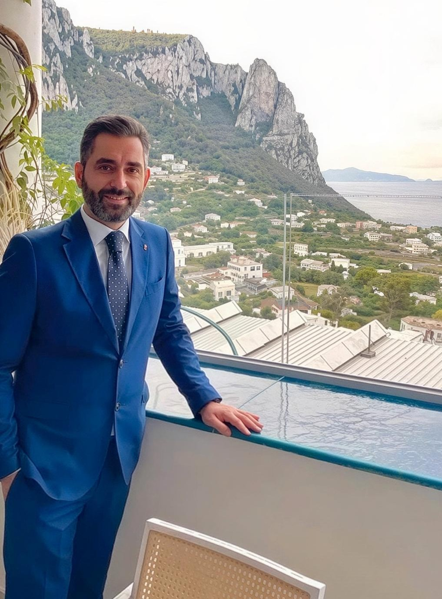

Beyond the Glass

Umberto Campioni is an Italian sommelier, hospitality professional, and wine educator based in Boston. With nearly two decades of experience in luxury hospitality, Michelin-starred restaurants, and fine dining, Umberto combines Italian culture, professional service, and modern hospitality leadership.
His career includes roles within renowned Michelin-starred restaurants and luxury hotels in Italy, alongside experience in restaurant management, wine education, guest experience, staff training, and curated wine events.
Beyond restaurant operations, Umberto has served as an international wine judge and tasting panel member in Brussels, as well as a speaker and educator within professional sommelier programs and hospitality events.
Through his platform, he shares wine culture, hospitality insights, industry stories, and real experiences from the floor — with an authentic, educational, and approachable voice.
His mission is to empower teams and brands by providing a sharper guest experience and a deeper connection to the products they serve.
Umberto Campioni